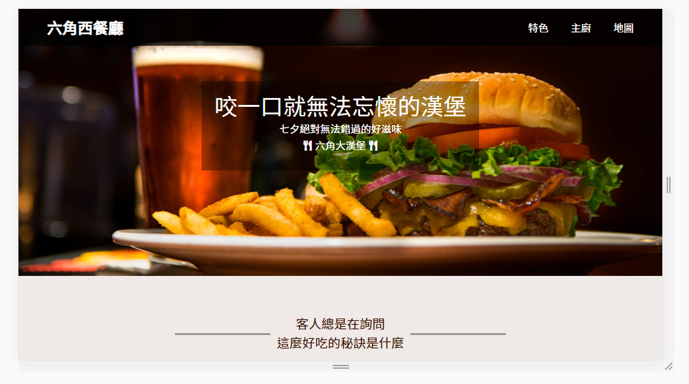
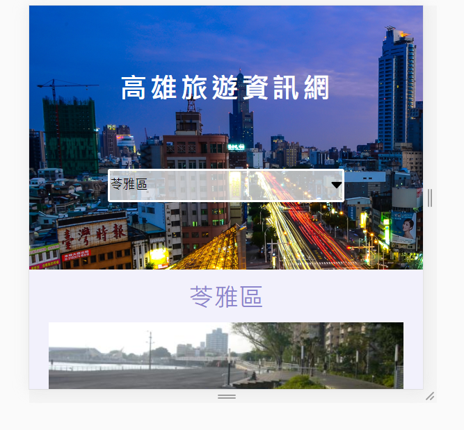
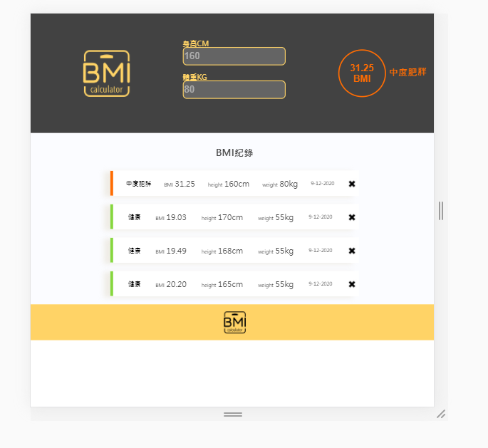
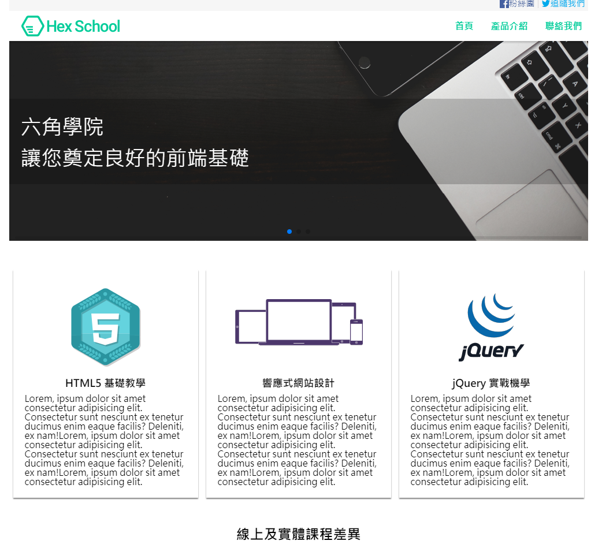

Layout work 天氣預報 css排版並且用animation功能、svg繪圖功能製作: See the Pen yLNPbGR by YAN TING CHEN (@BALABABABAA) on CodePen. 男團形象網站 使用bootstrap搭建男團形象網站，使用輪播功能: See the Pen SF9形象網站製作 by 陳雁婷 (@nmmkdimd) on CodePen. 響應式網站( 連結 ) RWD響應式網站製作，設置兩個斷點讓平板、手機用戶使用網站更加順暢:  JavaScript 高雄旅遊資訊網( 連結 ) 串接外部資料、使用功能分出各個區域景點:  BMI計算機( 連結 ) 使用localStorage紀錄輸入過的資訊:  Vue & jQuery Vue製作代辦清單 使用Vue過濾功能製作待辦清單: See the Pen Todo Demo Template (vue) by 陳雁婷 (@nmmkdimd) on CodePen. jQuery製作網站( 連結 ) 外部串接加入燈箱、輪播效果: 